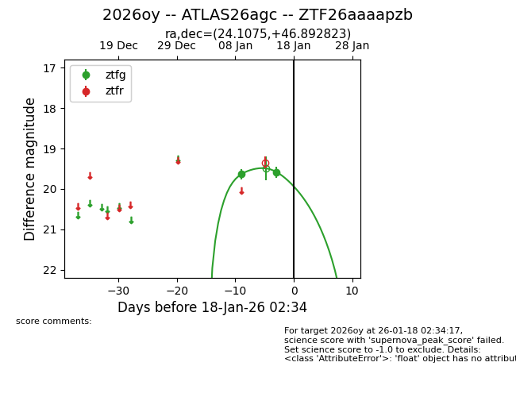
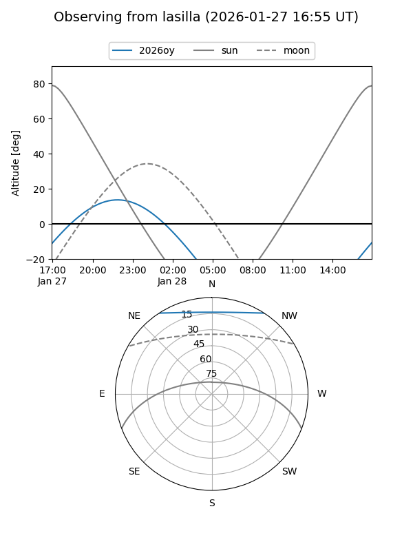
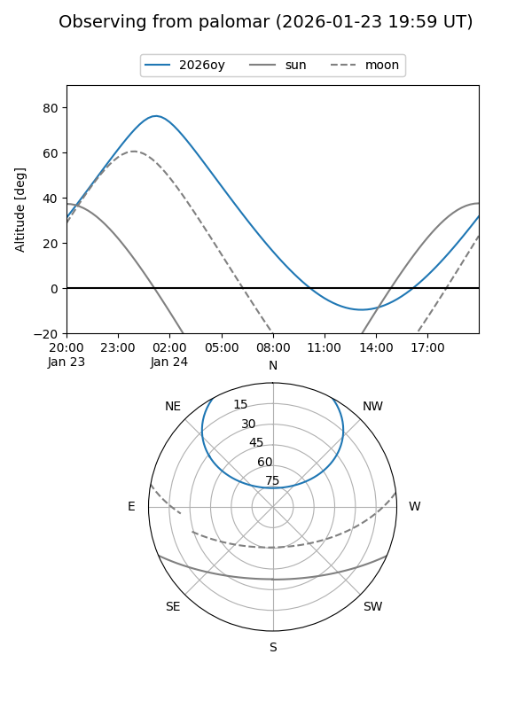
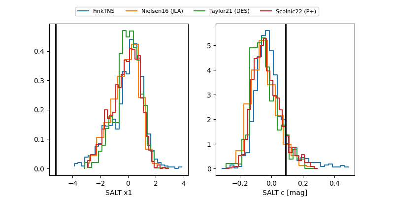

2026oy
Target 2026oy at 2026-01-25 03:21
Aliases and brokers:
FINK: link
Lasair: link
ALeRCE: link
TNS: link
YSE: link
alt names
ZTF26aaaapzb (ztf,fink_ztf)
2026oy (tns,yse)
ATLAS26agc (atlas)
Coordinates:
equatorial (ra, dec) = 24.1075,+46.89282
equatorial (HMS+DMS) = 01:36:25.80,+46:53:34.16
galactic (l, b) = (130.8746,-15.28388)
Flags:
Photometry:
last ztfg=19.76, ztfr=19.66
3 ztfg, 1 ztfr detections
Lightcurve

Visibility


Additional plots
